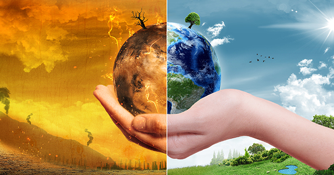
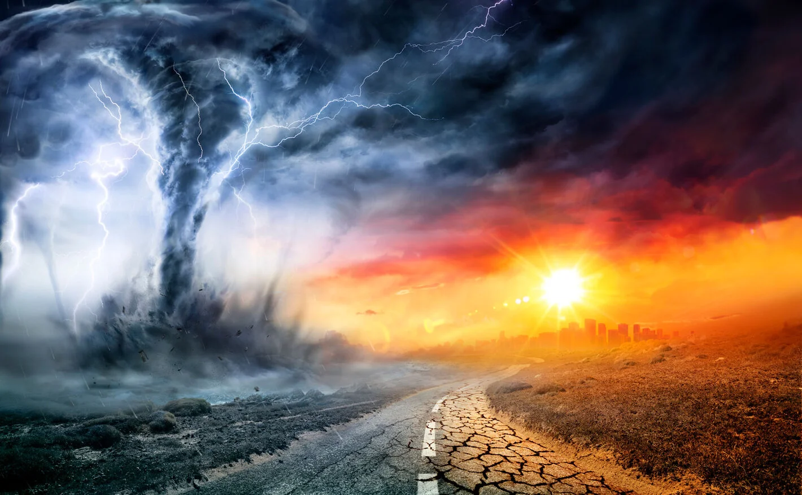
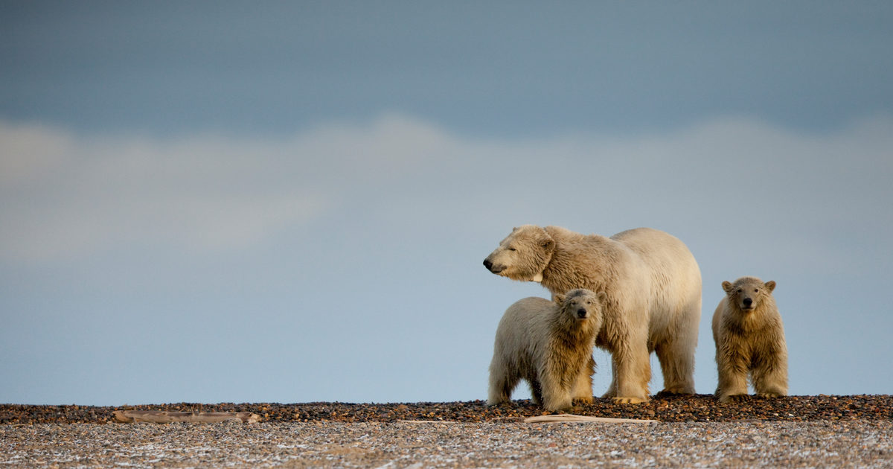
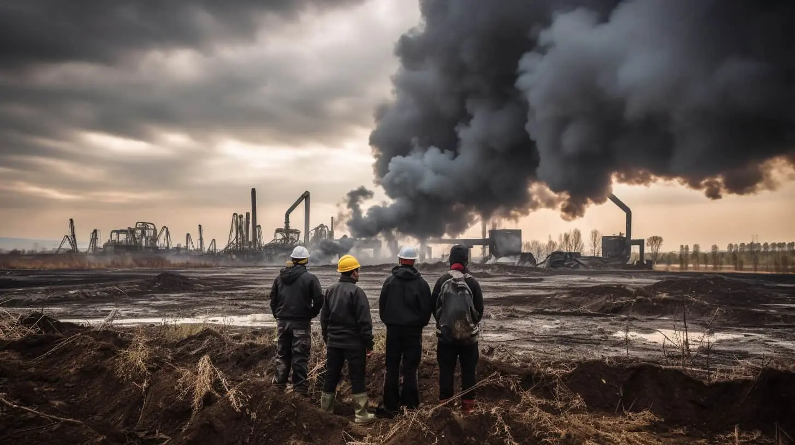
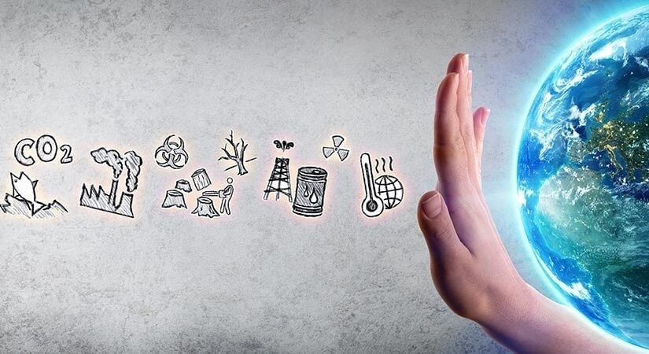

Introducción
La Tierra se encuentra en medio de un cambio trascendental, uno que afecta profundamente a los ecosistemas y la vida en nuestro planeta: el cambio climático. Este fenómeno, impulsado principalmente por la actividad humana, está alterando drásticamente las condiciones climáticas en todo el mundo. A medida que las temperaturas globales aumentan, los efectos secundarios se hacen cada vez más evidentes, y uno de los aspectos más críticos de esta transformación es su impacto en la biodiversidad.
Sin embargo, el cambio climático ha desencadenado una serie de desafíos para esta biodiversidad. Los patrones climáticos cambiantes, el aumento del nivel del mar, la acidificación de los océanos y la frecuencia de eventos climáticos extremos están perturbando los ecosistemas en todo el mundo, poniendo en riesgo a numerosas especies y desafiando la capacidad de los sistemas naturales para adaptarse.

Los efectos del cambio climático en la biodiversidad, como la pérdida de hábitats y la alteración de los patrones de migración.
El cambio climático está provocando una serie de efectos en el planeta, incluyendo el aumento de la temperatura global, el deshielo de los glaciares y el aumento del nivel del mar. Estos cambios tienen consecuencias significativas en los ecosistemas terrestres y marinos.
1.- Pérdida de hábitats:
Uno de los efectos más evidentes del cambio climático en la biodiversidad es la pérdida y alteración de hábitats naturales. A medida que las temperaturas globales aumentan, los ecosistemas clave como bosques, arrecifes de coral y humedales se ven amenazados. Por ejemplo, el deshielo de los glaciares y la subida del nivel del mar están inundando hábitats costeros, mientras que las sequías y los incendios forestales se vuelven más frecuentes y graves en regiones boscosas.
Esto provoca la degradación de los hábitats y, en última instancia, la pérdida de biodiversidad, ya que muchas especies no pueden adaptarse lo suficientemente rápido a estos cambios. Las especies que dependen de hábitats específicos corren el riesgo de extinguirse si sus hogares naturales desaparecen o se vuelven inadecuados para su supervivencia.
2.- Alteración de patrones de migración:
El cambio climático también está perturbando los patrones de migración de muchas especies. Las aves, los mamíferos, los peces y otros animales suelen migrar en busca de temperaturas y condiciones adecuadas para alimentarse y reproducirse. Sin embargo, a medida que las estaciones cambian y las temperaturas se vuelven menos predecibles, estas migraciones pueden verse alteradas.
Algunas especies pueden adelantar o retrasar su migración, lo que puede desencadenar desajustes en los ecosistemas. Por ejemplo, las flores pueden florecer antes de que lleguen los polinizadores, lo que afecta la reproducción de las plantas. Esto puede tener un efecto dominó en toda la cadena alimentaria.
Además, las especies que no pueden adaptarse a los cambios en los patrones de migración pueden enfrentar dificultades para encontrar alimento y refugio, lo que pone en riesgo su supervivencia.
Estos efectos del cambio climático en la pérdida de hábitats y la alteración de los patrones de migración son solo dos ejemplos de cómo esta crisis afecta a la biodiversidad en todo el mundo. La conservación de la biodiversidad se ha vuelto más apremiante que nunca, y la comprensión de estos efectos es fundamental para desarrollar estrategias efectivas de mitigación y adaptación.

Ejemplos de especies y ecosistemas afectados por el cambio climático
1.- Oso polar (Ursus maritimus):
Los osos polares son emblemáticos en términos de cambio climático. El derretimiento del hielo marino en el Ártico debido al aumento de las temperaturas hace que sea más difícil para los osos polares cazar focas, su principal fuente de alimento. La pérdida de hielo marino y la reducción de las áreas de caza amenazan su supervivencia.
1.- Coral blanqueado:
Los arrecifes de coral son ecosistemas marinos vitales, pero el aumento de las temperaturas del agua provoca el blanqueamiento de los corales. Esto sucede cuando los corales expulsan las algas simbióticas que les proporcionan nutrientes y color, lo que los debilita y eventualmente puede llevar a su muerte. Los arrecifes de coral son esenciales para la biodiversidad marina y la protección de las costas contra las tormentas.
3.- Pingüino emperador (Aptenodytes forsteri):
Estas aves icónicas del Antártico se ven afectadas por la pérdida de hielo marino, que afecta sus rutas de alimentación y reproducción. Además, el cambio climático puede alterar la disponibilidad de krill, un alimento fundamental para los pingüinos emperadores.

El impacto del cambio climático en la vida humana y la importancia de la acción colectiva
El cambio climático provoca un aumento en las temperaturas extremas, lo que puede resultar en olas de calor mortales, sequías prolongadas y eventos climáticos más intensos. Esto afecta directamente la salud y la seguridad de las personas, especialmente a aquellos en regiones vulnerables.
El cambio climático puede alterar patrones de lluvia y reducir la disponibilidad de agua dulce. Esto tiene un impacto directo en la agricultura y la seguridad alimentaria, ya que las sequías y las inundaciones pueden dañar los cultivos y aumentar los precios de los alimentos.
El derretimiento de los glaciares y la expansión térmica del agua del mar debido al calentamiento global resultan en un aumento del nivel del mar. Esto pone en peligro a comunidades costeras al aumentar el riesgo de inundaciones, especialmente en áreas densamente pobladas.

Medidas a nivel global para combatir el cambio climático y proteger la biodiversidad
La lucha contra el cambio climático y la protección de la biodiversidad son dos desafíos interconectados que requieren un enfoque global y coordinado. Aquí hay algunas medidas a nivel global que se están tomando para abordar ambos problemas:
1.- Acuerdos internacionales:
Acuerdo de París: Este acuerdo, adoptado en 2015, establece objetivos para limitar el aumento de la temperatura global a menos de 2 grados Celsius por encima de los niveles preindustriales, con esfuerzos para limitar el aumento a 1,5 grados. Los países se comprometen a reducir sus emisiones de gases de efecto invernadero y a aumentar sus esfuerzos para combatir el cambio climático.
2.- Conservación de áreas protegidas:
Se han establecido áreas protegidas a nivel global para conservar la biodiversidad y los ecosistemas. Por ejemplo, el Convenio sobre la Diversidad Biológica (CDB) promueve la creación y gestión de áreas protegidas en todo el mundo.
3.- Reducción de la deforestación:
Iniciativas como REDD+ (Reducción de Emisiones por Deforestación y Degradación Forestal) trabajan para reducir la deforestación y promover la gestión sostenible de los bosques, lo que ayuda a proteger la biodiversidad y reduce las emisiones de carbono.
4.- Desarrollo de energías limpias:
La promoción de fuentes de energía renovable, como la energía solar y eólica, ayuda a reducir las emisiones de gases de efecto invernadero y disminuye la presión sobre los ecosistemas naturales.
5.- Innovación tecnológica:
La inversión en tecnologías limpias y sostenibles, como el almacenamiento de energía, la agricultura de precisión y la gestión de residuos, contribuye a mitigar el cambio climático y proteger la biodiversidad.
6.- Educación y concienciación:
Campañas educativas y de concienciación pública informan a la población sobre la importancia de la conservación de la biodiversidad y la reducción de la huella de carbono. Esto fomenta un cambio de comportamiento a nivel individual y comunitario.
7.- Apoyo a la investigación científica:
La investigación científica proporciona datos fundamentales para comprender y abordar el cambio climático y la pérdida de biodiversidad. Los gobiernos y organizaciones brindan apoyo a la investigación en estas áreas.
